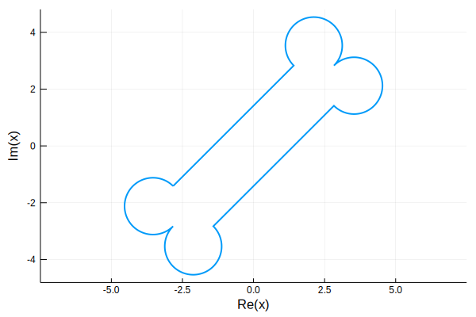

Paths
A path is a sequence of curves that compose a continuous complex-valued path.
Abstract interface
Every AbstractPath type is expected to provide the following method. (Here P is any value of type AbstractPath.)
curves(P): Return an array of the curves constitutingP.
In addition, default implementations are given for the following methods.
| Method | Description |
|---|---|
curve(P,k::Integer) | kth curve of P. |
vertices(P) | Vertices of P (the endpoints of the constituent curves) |
vertex(P,k::Integer) | kth vertex of P. |
length(P) | Number of curves in the path. |
isfinite(P) | True if the path is bounded. |
point(P,t::Real) | Point on the path. |
point(P,t::AbstractVector) | Vectorization of point. |
tangent(P,t::Real) | Complex-valued tangent at a point. |
unittangent(P,t::Real) | Normalized tangent at a point. |
normal(P,t::Real) | Leftward-pointing unit normal at a point. |
conj(P) | Complex conjugate of the path. |
reverse(P) | Reverse the orientation of the path. |
+,-,*,/ | Translate, rotate and scale a path. |
isapprox(P1,P2) | Determine whether two values represent the same path. |
arclength(P) | Arc length of the path. |
dist(z,P) | Distance from a point to the path. |
closest(z,P) | Point on the path nearest to a given number. |
Iterator interface
The AbstractPath type implements the eltype, length, getindex, and iterate methods of the standard Julia iterator interface. Therefore, clauses such as for c in P will iterate over the curves in P for loops, comprehensions, and generators.
AbstractClosedPath
The AbstractClosedPath subtype modifies a few of the implementations above:
| Method | Description |
|---|---|
vertices(P) | Only the unique vertices; i.e., does not duplicate the initial/final vertex. |
curve(P,k) | kth curve of the path in a circular/modulo sense. |
vertex(P,k) | kth vertex of the path in a circular/modulo sense. |
point, tangent, unittangent, normal | Use a circular/modulo interpretation of the parameter. |
The AbstractClosedPath type also has default implementations for the following methods.
| Method | Description |
|---|---|
winding(P,z) | Winding number of P about z. |
isinside(z,P) | Detect whether z lies inside the path. |
isoutside(z,C) | Detect whether z lies outside the path. |
Generic types
There are generic implementations of both of the abstract types described above.
Path
Path implements the AbstractPath type. A path is created by calling Path(c), where c is a vector of curves subtyped from AbstractCurve. The constructor tests the endpoints of the given curves for continuity up to a selectable tolerance.
ClosedPath
ClosedPath implements the AbstractClosedPath type. Its chief difference from the Path type is that the constructor also checks whether the initial and final points coincide (up to tolerance). As a subtype of AbstractClosedPath, this type also inherits the use of circular/modulo addressing for curve selection and parameterization.
Examples
Here is a "dog bone" path defined by arcs and segments.
a = Arc(-1,1,-1im)
right = Path([4+1im+a,4-1im-1im*a])
s = Segment(-3+1im,3+1im)
p = ClosedPath([s,right...,-s,-right...])
plot(exp(1im*pi/4)*p)